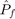
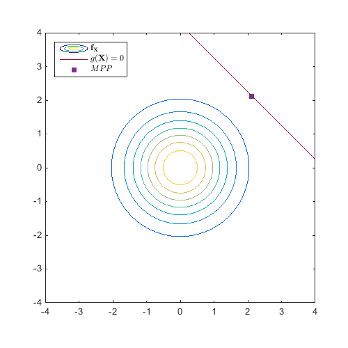
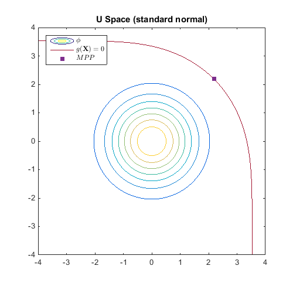
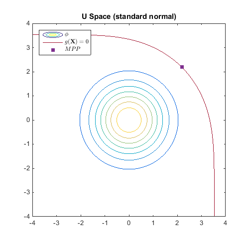

Examples / Reliability assessment / sorm
This file is a complete demo of the capability of the sorm function from the CODES toolbox.
Contents
Documentation
The documentation for the sorm function can be found here.
Set rng
Set random number generator seed:
rng(0)
Simple linear example
Compute the SORM  on a simple linear example:
g=@CODES.test.lin; res_sorm=CODES.reliability.sorm(g,2);
Compare to FORM estimate
res_form=CODES.reliability.form(g,2); CODES.common.disp_matrix([res_sorm.beta res_form.beta;... res_sorm.Pf res_form.Pf],... {'Beta','Pf'},{'SORM','FORM'})
SORM FORM Beta 2.99999 3 Pf 0.00134993 0.0013499
Plot the limit state and the MPP
figure('Position',[200 200 500 500]) [X,Y]=meshgrid(linspace(-4,4,100)); Z=reshape(g([X(:) Y(:)]),size(X)); Z_pdf=reshape(prod(normpdf([X(:) Y(:)]),2),size(X)); Colors=get(gca,'ColorOrder'); contour(X,Y,Z_pdf) hold on contour(X,Y,Z,[0 0],'Color',Colors(end,:)) caxis([min(Z_pdf(:)) max(Z_pdf(:))]) plot(res_sorm.MPP(1),res_sorm.MPP(2),'s',... 'MarkerEdgeColor',Colors(4,:),... 'MarkerFaceColor',Colors(4,:)) axis equal leg=legend('$\mathbf{f}_{\mathbf{X}}$','$g(\mathbf{X})=0$',... '$MPP$','location','NorthWest'); set(leg,'interpreter','latex')
Exponential distribution
Same example but the variable are exponentials. We use iso-probabilistic transformation:
T=@(x)norminv(expcdf(x,0.5));
Tinv=@(u)expinv(normcdf(u),0.5);
res_sorm=CODES.reliability.sorm(g,2,'Tinv',Tinv);
Compare with FORM and Monte Carlo estimate
res_form=CODES.reliability.form(g,2,'Tinv',Tinv); res_mc=CODES.reliability.mc(g,2,'sampler',@(N)exprnd(0.5,N,2)); CODES.common.disp_matrix([res_form.beta res_sorm.beta res_mc.beta;... res_form.Pf res_sorm.Pf res_mc.Pf;... res_form.LS_count res_sorm.LS_count res_mc.LS_count],... {'Beta','Pf','# funct. calls'},{'FORM','SORM','MC'})
FORM SORM MC
Beta 3.09296 2.86697 2.87911
Pf 0.000990845 0.00207211 0.001994
# funct. calls 11 20 1e+06
Plot the limit state and the MPP
figure('Position',[200 200 500 500]) [X,Y]=meshgrid(linspace(0,5,100)); [Xu,Yu]=meshgrid(linspace(-4,4,100)); Z=reshape(g([X(:) Y(:)]),size(X)); Zu=reshape(g(Tinv([Xu(:) Yu(:)])),size(X)); Z_pdf=reshape(prod(exppdf([X(:) Y(:)],0.5),2),size(X)); Zu_pdf=reshape(prod(normpdf([Xu(:) Yu(:)]),2),size(X)); Colors=get(gca,'ColorOrder'); contour(X,Y,Z_pdf) hold on contour(X,Y,Z,[0 0],'Color',Colors(end,:)) caxis([min(Z_pdf(:)) max(Z_pdf(:))]) plot(res_sorm.MPP(1),res_sorm.MPP(2),'s',... 'MarkerEdgeColor',Colors(4,:),... 'MarkerFaceColor',Colors(4,:)) axis equal leg=legend('$\mathbf{f}_{\mathbf{X}}$','$g(\mathbf{X})=0$',... '$MPP$','location','NorthWest'); set(leg,'interpreter','latex') title('X Space') figure('Position',[200 200 500 500]) contour(Xu,Yu,Zu_pdf) hold on contour(Xu,Yu,Zu,[0 0],'Color',Colors(end,:)) caxis([min(Zu_pdf(:)) max(Zu_pdf(:))]) MPPu=T(res_sorm.MPP); plot(MPPu(1),MPPu(2),'s',... 'MarkerEdgeColor',Colors(4,:),... 'MarkerFaceColor',Colors(4,:)) axis equal leg=legend('$\phi$','$g(\mathbf{X})=0$','$MPP$',... 'location','NorthWest'); set(leg,'interpreter','latex') title('U Space (standard normal)')
 
 Compute SORM estimate based on a previous FORM calculation
res_form=CODES.reliability.form(g,2,'Tinv',Tinv,'solver','hl-rf'); res_sorm=CODES.reliability.sorm(g,2,'Tinv',Tinv,'res_form',res_form); res_mc=CODES.reliability.mc(g,2,'sampler',@(N)exprnd(0.5,N,2)); CODES.common.disp_matrix([res_form.beta res_sorm.beta res_mc.beta;... res_form.Pf res_sorm.Pf res_mc.Pf;... res_form.LS_count res_sorm.LS_count res_mc.LS_count],... {'Beta','Pf','# funct. calls'},{'FORM','SORM','MC'})
FORM SORM MC
Beta 3.09295 2.86672 2.88501
Pf 0.000990889 0.00207377 0.001957
# funct. calls 19 9 1e+06
Compare approximations using recall
g=@(x)-(x(:,1)+x(:,2)).^2+20; res_form=CODES.reliability.form(g,2,'solver','hl-rf'); res_breitung=CODES.reliability.sorm(g,2,'res_form',res_form,... 'approx','Breitung'); res_tvedt=CODES.reliability.sorm(g,2,'res_form',res_form,... 'approx','Tvedt','H',res_breitung.H,'grad',res_breitung.G); res_koyluoglu=CODES.reliability.sorm(g,2,'res_form',res_form,... 'approx','Koyluoglu','H',res_breitung.H,'grad',res_breitung.G); res_cai=CODES.reliability.sorm(g,2,'res_form',res_form,... 'approx','Cai','H',res_breitung.H,'grad',res_breitung.G); res_zhao=CODES.reliability.sorm(g,2,'res_form',res_form,... 'approx','Zhao','H',res_breitung.H,'grad',res_breitung.G); res_subsim=CODES.reliability.sorm(g,2,'res_form',res_form,... 'approx','Subset','H',res_breitung.H,'grad',res_breitung.G); res_mc=CODES.reliability.mc(g,2); CODES.common.disp_matrix([res_breitung.beta res_tvedt.beta ... res_koyluoglu.beta res_cai.beta res_zhao.beta ... res_subsim.beta res_mc.beta;... res_breitung.Pf res_tvedt.Pf res_koyluoglu.Pf ... res_cai.Pf res_zhao.Pf res_subsim.Pf res_mc.Pf;... res_breitung.LS_count res_tvedt.LS_count res_koyluoglu.LS_count ... res_cai.LS_count res_zhao.LS_count res_subsim.LS_count ... res_mc.LS_count]',... {'Breitung','Tvedt','Koyluoglu','Cai','Zhao','SubSim','MC (ref)'},... {'Beta','Pf','# funct. calls'});
Beta Pf # funct. calls
Breitung 3.05994 0.00110692 9
Tvedt 3.05478 0.00112612 0
Koyluoglu 3.09168 0.000995146 0
Cai 3.06051 0.00110479 0
Zhao 3.16228 0.000782705 0
SubSim 2.93886 0.0016471 0
MC (ref) 2.95804 0.001548 1e+06
Copyright © 2015 Computational Optimal Design of Engineering Systems (CODES) Laboratory. University of Arizona.
|
|
Computational Optimal Design of Engineering Systems |

|